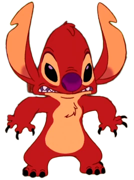
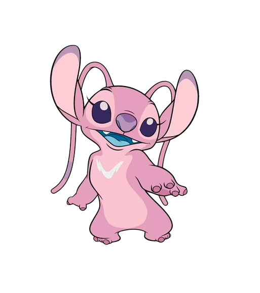

Stitch

O mais avançado e forte, criado para destruição, mas se tornou bom graças a Lilo
Evile
Mais forte que Stitch, mas muito brincalhão e incapaz de levar batalhas a sério
Angel
Interesse romântico de Stitch. Sua voz pode transformar experiências boas em más e vice-versa